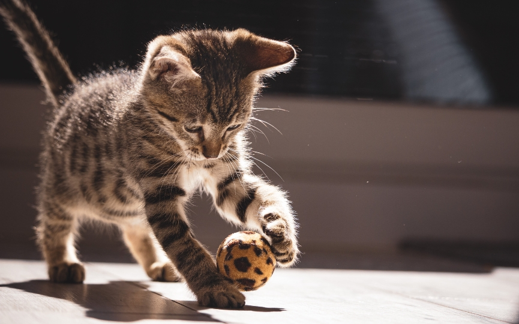

bulldog frances

bulldog pequeño llamado Rocky
canichito marron

tiene 2 años y se llama Pompon
gatito con pelaje atigrado
gato bebe llamado Cherry
loro

loro colorido llamado Arcoiris muy parlanchin
conejo

le gustan las zanahorias,es marron y blanco y se llama chilii
ajolote

rosita y bien portado llamado coocky